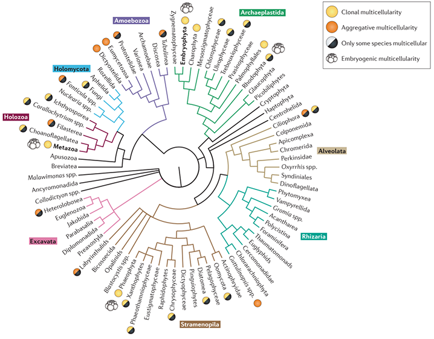
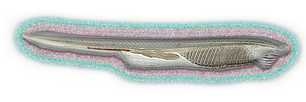

Rulers of the Earth had many key transitions in their path to taking over the world. Plants, animals, and fungi all
have these things in common. They rule the world. They all love low volume funk music. And they are multicellular
(mostly). These behemoths of lifeforms pack cell specialization, where labor is divided and given to cells dedicated
to performing specific tasks. These are exemplified by muscle cells in the animals, whose whole morphology developed
to “pull on the body and move it a certain direction.” Multicellularity was a game changer in a world dominated by
microbes like bacteria and protists. When single celled protists started living in colonies, a form of society
emerged. Just like human society, when they started out, multicellulars weren't as complex as they are today.
Remnants of ancient human societies live on today and they still carry on their traditions, but because of the
development to the modern world, they have changed. Likewise, remnants of ancient protist societies still live on
today and we can study them to learn more about how the features of multicellularity evolved. This is akin to
looking at the traditions of modern Māori communities in order to understand their Polynesian ancestors. But sadly,
many intermediates between ancient and new societies have gone extinct. We can only learn with what we have. For
studying the evolution of animals, we have Choanoflagellates, the Filastereans, and sponges
among other model
organisms. If you're interested in this topic, I've linked research papers below for you especially.
Why am I so interested in multicellularity? It contains many nuggets of interesting developments in living systems.
Multicellularity has implications. You become a living environment for others to live on and in. You can evolve
specialized structures that aren't limited to micrometer scales. You can develop strong extracellular materials that
prevent drying out. You can rule the land or sky. The road to intelligence requires multicellularity as a key
transition. One of the things I pursue is a new biology. And that can be given in two ways: synthetic life or
undiscovered life. For those wanting to create or find intelligent life, multicellularity is something you must
generate or look for. It requires living systems to be social with each other to accomplish a greater task.
The border between unicellularity and multicellularity is a rough one. It brings philosophical problems not debated
in the scientific method. Are we just colonies of clonal cells, each striving to survive but limited by the whole
colony? Cancer is an interesting case study where cells mutate and begin to act on their own, breaking free of
programed societal restrictions. Its survival takes over to the detriment of the colony. But we must learn how
multicellulars evolve to understand what can be used to connect living systems. How may we mimic these requirements
in unicellulars to convince them to become more social? Fast artificial evolution to multicellularity? There are
many things to look at. As I said before, multicellularity has great implications.
Interesting reviews on this topic:
◉
origin of animals from a unicellular perspective
◉
origin of animal multicellularity and cell differentiation
◉
multiple origins of complex multicellularity
◉
OoM and early history of the genetic toolkit For animal development
Era of Amphioxus [2017-2020]
The Amphioxus Song Annotated
My stepping stone into the scientific world and learning methodologies began with this little worm. The amphioxus.
The
amphioxus is an animal closely related to vertebrates, a group comprising of fish,
amphibians,
reptiles, birds, and mammals. It is a close descendant of the last common ancestor to all vertebrates,
which lived about 500 million years ago (MYA). We can use the amphioxus as a portal to 500 MYA to understand ancient
populations of vertebrate ancestors that ended up developing unique features such as adaptive immunity, complex
nervous systems, endocrine signaling, and many other unique features.
Here are some things I did:
◉ Protocol development to culture and transfect amphioxus tissues. With the goal to make immortal cell lines. Lots of cloning.
◉ Finding a form of ancient adaptive immunity. [VCBPs]
◉ Husbandry and breeding protocols for the Amphioxus.
◉ Exploring why they produce GFP in their tentacles and eyespot area. Cloning the GFP gene from their genome,
which
resides in a freezer somewhere. Amplification of GFP from cDNA showed two possible splicotypes.
◉ Developing a crude tool to explore the
locations of ancient Chordates through time and space on Earth by tracing coastlines.
 If you would like more information, feel free to contact me.
[contact]
Go to Scientific Repertoire for
specifics.
If you would like more information, feel free to contact me.
[contact]
Go to Scientific Repertoire for
specifics.
The CNRC [Summer 2019]
Worked in this government building for a summer. Had blast. Spent plenty of time doing immunohistochemistry and
using a godly Leica SP8 confocal microscope. I'll throw a photo I took below:
 This is a tri-stained cross section of baby pig muscle.
This is a tri-stained cross section of baby pig muscle.
Watch me present this research at Houston Baptist University
This is a tri-stained cross section of baby pig muscle.